Projekte
Eine Auswahl aus über 800 Projekten.
Tippen Sie auf einen Ort in der Karte oder wählen Sie weiter unten nach Art.
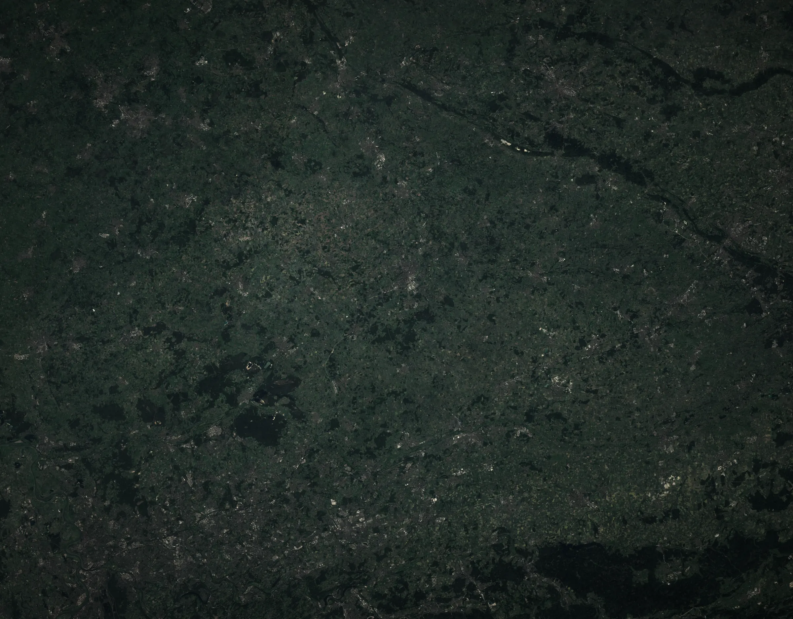
Außerdem:
Rheine · 3 Projekte
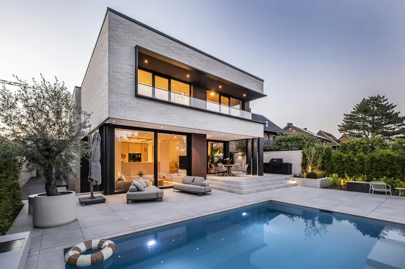
Offen zum GartenEinfamilienhausZur Straße geschlossen, zum Garten ganz offen.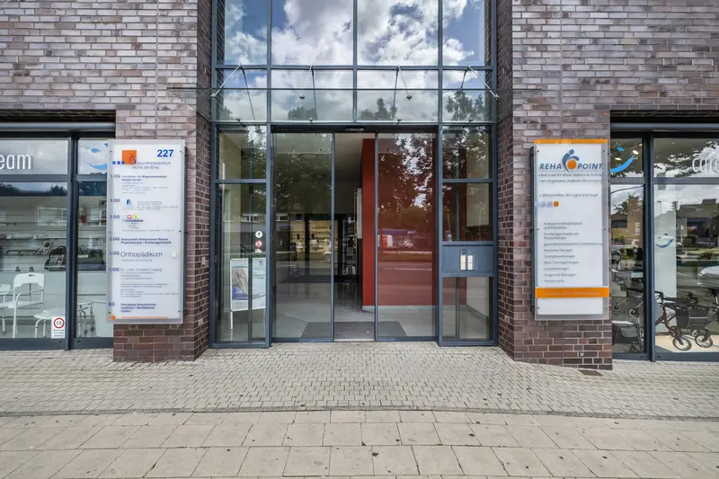
Orthopädische PraxisGewerbebauEine Praxis, komplett neu ausgebaut.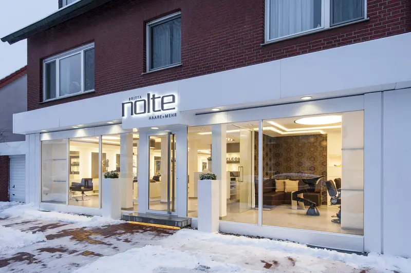
Friseur NolteGewerbebauUmbau eines Friseursalons.Neuenkirchen
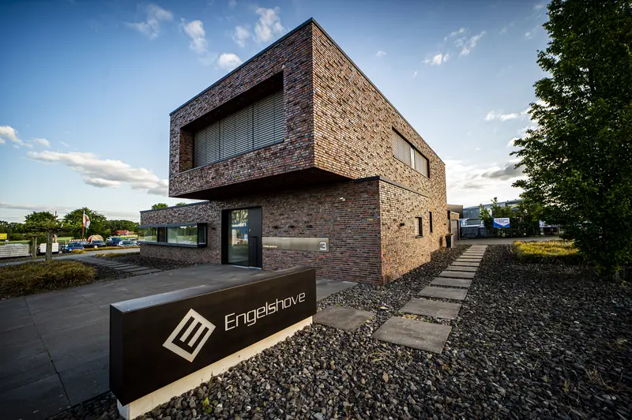
Unser Büro, Dieselstraße 3GewerbebauZwei versetzte Kuben in rotbuntem Klinker.Grafschaft Bentheim · 2 Projekte
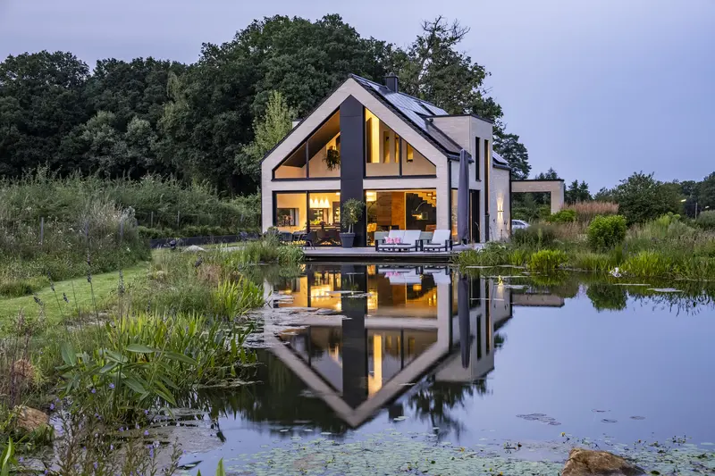
Der Giebel im WasserEinfamilienhausEin Glasgiebel, der sich im Wasser spiegelt.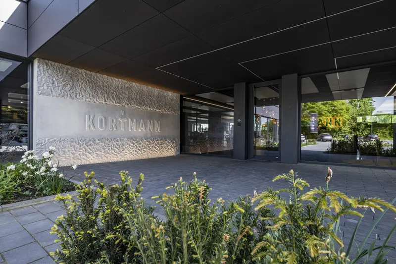
Firmensitz mit Wow-EffektGewerbebau · SchüttorfEin Firmensitz wird zur Arbeitswelt.Kreis Steinfurt
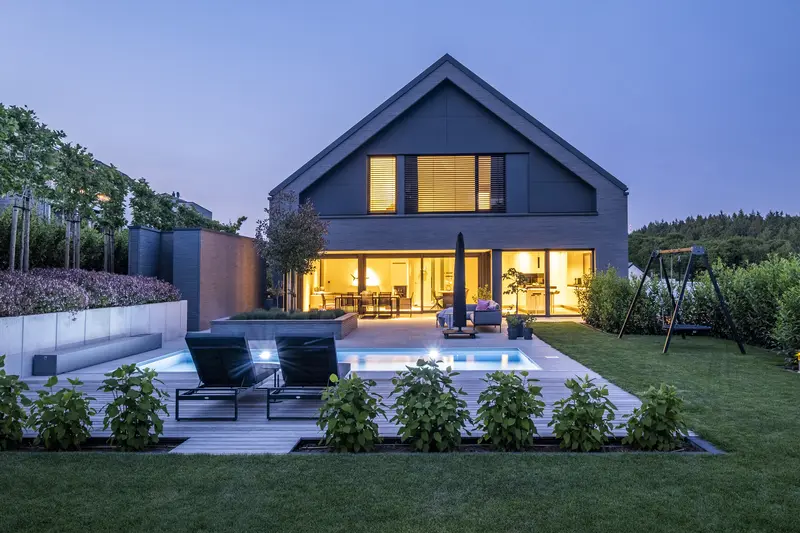
Schönheit am HangEinfamilienhausEin Haus am Hang, geformt von strengen Vorgaben.Coesfeld
 Wohnen um den InnenhofModernisierungFlache Anbauten aus grauem Klinker umschließen einen Hof.
Wohnen um den InnenhofModernisierungFlache Anbauten aus grauem Klinker umschließen einen Hof.
Ascheberg
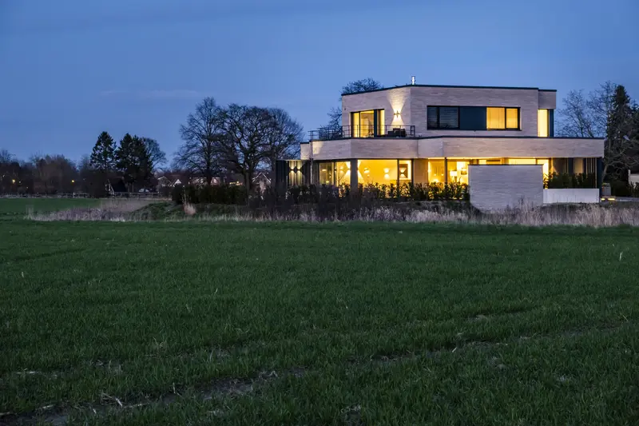
Maßgeschneidertes ZuhauseEinfamilienhaus215 m², geplant für wechselnde Lebensphasen.Oer-Erkenschwick
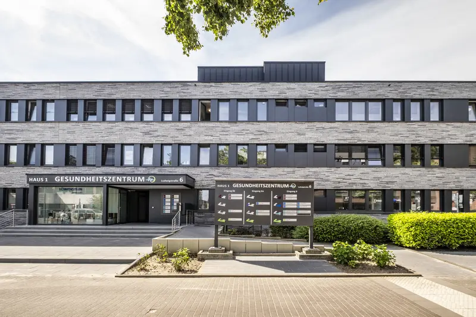
Wohn- und Geschäftshaus in Oer-ErkenschwickGewerbebauVier Baukörper für Praxis, Pflege und Wohnen.
Satellitenbild: Sentinel-2 cloudless 2016, EOX IT Services GmbH, CC BY 4.0, enthält veränderte Copernicus-Sentinel-Daten. Orte aus Projektangaben, auf Ortsebene.
Offen zum Garten
Zur Straße geschlossen, zum Garten ganz offen.
Zum ProjektNeues Leben am Hang
Aus einem Bestandshaus wurde ein neues Haus.
Zum Projekt
Mit der Umgebung im Dialog
Gestaffelte Baukörper, rundes Oberlicht, ein Garten in weichen Formen.
Zum ProjektSchönheit am Hang
Ein Haus am Hang, geformt von strengen Vorgaben.
Zum ProjektUnter Reet
Reet, Klinker und eine dunkle Fassade.
Zum Projekt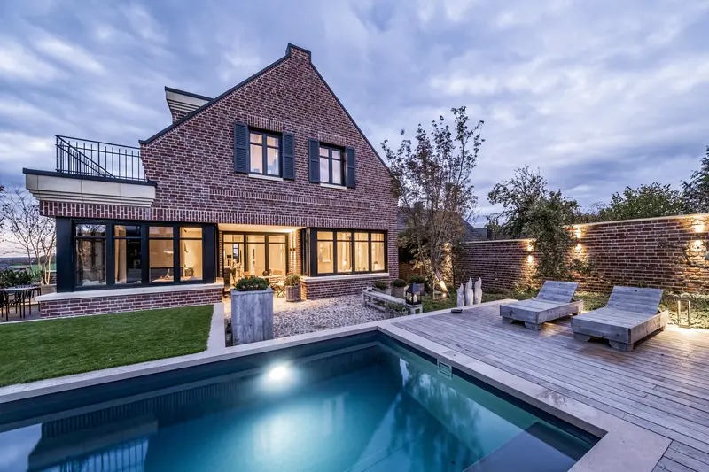
Klassiker am Wasser
Satteldach aus Klinker, davor das Wasser.
Zum Projekt


Außerdem veröffentlicht
Weitere Häuser in Magazinen und Datenbanken.
- Traumhaus mit PotenzialErsatzneubau für eine sechsköpfige Patchwork-Familie auf rund 1.275 m². Cube Ruhrgebiet 03|25.Bericht lesen
- Schwarze SchönheitFamilienhaus in Schwarz und Weiß. Cube Ruhrgebiet 04|23.Bericht lesen
- Das Besondere herausstellenGroßzügiges Einfamilienhaus mit lebendiger Steinfassade und Innenhof. Cube Ruhrgebiet 01|23.Bericht lesen
- Ein FamilienidyllZwei Geschosse, Flachdach, Klinker mit gewaschener Oberfläche, Sauna, Smart Home. Cube Ruhrgebiet 02|22.Bericht lesen
- Perfekt ausbalanciertEinfamilienhaus einer vierköpfigen Familie auf schmalem Grundstück. Cube Ruhrgebiet 02|21.Bericht lesen
- Ein Hoch auf ZiegelWohn-, Pool- und Gästehaus aus hellgrauem Wasserstrichziegel. Cube Ruhrgebiet 01|20.Bericht lesen
- Passivhaus für drei GenerationenErsatzneubau in Neuenkirchen, hellgrauer Klinker, zwei Kuben. Heizenergiebedarf 22,1 kWh/m²a.Objekt bei Heinze
- Haus für den RuhestandEinfamilienhaus aus Mauerwerk und Glas in Hasbergen.Objekt bei Heinze


Ihr Projekt.
Erzählen Sie uns, was Sie vorhaben. Alles Weitere besprechen wir persönlich.
Bauvorhaben anfragenOder anrufen: 05973 / 90 923 0